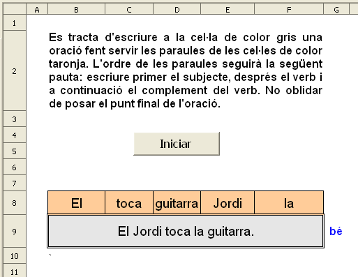
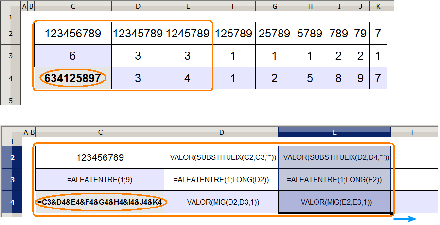

Presentació gràfica de l'activitat.

Funcions que es fan servir en aquesta activitat
Objectiu de l'activitat
Ordenar paraules d'una oració.
Desenvolupament de l'activitat
1. Obrir el fitxer M4 i afegir un nou full amb el nom de M4P7 ordenar paraules
2. Escriure a la cel·la B2 el següent text: Es tracta d'escriure a la cel·la de color gris una oració fent servir les paraules de les cel·les de color taronja. L'ordre de les paraules seguirà la següent pauta: escriure primer el subjecte, després el verb i a continuació el complement del verb. No oblidar de posar el punt final de l'oració.
3. Escriure en cada una de les cel·les del rang S3:X12 el següent:
Aquestes seran les oracions les paraules de les quals es presentaran desordenades.
4. Escriure a la cel·la R3: =SI(J2=0;ALEATENTRE(1;10))
Aquesta fórmula servirà de suport per triar una oració de les deu que s'escriuran al rang T3:X12.
5. Escriure a la cel·la
k3:
1
6. Extendre la cel·la
k3 fins la cel·la
O3
Els números que hi ha a les cel·les del rang K3:03 (de l'1 al 5) serviran de base per triar números no repetits.
10. Escriure a la cel·la
K4:
=SI(J2=0;CONSULTAV(R3;S3:X12;2)).
Fa una CONSULTA vertical a la segona columna del rang S3:X12 en funció del número que hi ha a la cel·la R3. El número que hi ha a la cel·la R3 correspont a la fila de l'oració.
11. Escriure a la cel·la
L4:
=SI(J2=0;CONSULTAV(R3;S3:X12;3)). El mateix fent la CONSULTA a la columna 3.
12. Escriure a la cel·la
M4:
=SI(J2=0;CONSULTAV(R3;S3:X12;4)). El mateix fent la CONSULTA a la columna 4.
13. Escriure a la cel·la
N4:
=SI(J2=0;CONSULTAV(R3;S3:X12;5)). El mateix fent la CONSULTA a la columna 5.
14. Escriure a la cel·la
O4:
=SI(J2=0;CONSULTAV(R3;S3:X12;6)). El mateix fent la CONSULTA a la columna 6.
15. Escriure a la cel·la
Q4:
=K4&" "&L4&" "&M4&" "&N4&" "&O4
16. Escriure a la cel·la
Q2 =
Q4&"."
Per presentar una oració amb les paraules desordenades es pot fer associant cada paraula a un número aleatori. D'aquesta manera si l'oració està formada per cinc paraules, caldrà presentar cinc números.
Cal tenir en compte que les paraules es poden presentar desordenades però no repetides. Llavors es tracta de presentar cinc números aleatoris de l'1 al 5 que no estiguin repetits i que la majoria de vegades estiguin desordenats. Per resoldre aquesta qüestió es pot fer el següent:
17. Escriure en cada una de les cel·les del rang
K5:O5 el següent:
=SI(J2=0;ALEATENTRE(1;5)).
Aquests aleatoris serviran de base per a triar cinc números sense que hi hagi cap número repetit.
18. Escriure a la cel·la
K6:
=COMPTASI($K$5:$O$5;K5).
Aquesta fórmula permet saber quantes vegades està repetit el número que hi ha a la cel·la K5.
19. Copiar la cel·la
K6 i enganxar-ho a les cel·les del rang
L6:O6
Sabent quantes vegades es repeteix un número, caldrà fer una fórmula que permeti seleccionar els aleatoris no repetits (les cel·les del rang K6:O6 que tinguin el valor 1), fent així la primera tria de números no repetits.
20. Escriure a la cel·la
K7:
=SI(K6=1;K5;""). Aquesta fórmula permetrà seleccionar els números aleatoris no repetits fent així la primera tria.
21. Copiar la cel·la
K7 i enganxar-ho a les cel·les del rang
L7:O7.
Havent fet la primera tria del números no repetits del rang K7:O7, caldrà fer una segona tria comparant els rangs K7:O7 amb el rang K3:O3 i així fer la segona tria del números no repetits.
22. Escriure a la cel·la
K8:
=SI(COMPTASI($K$7:$O$7;K3)=0;K3;"")
23. Copiar la cel·la
K8 i enganxar-ho a les cel·les del rang
L8:O8
Havent fet la primera i la segona tria, es concatenen les cel·les del rang K7:O8 (pas 24) i així s'obté una cadena seguida de números no repetits.
24. Escriure a la cel·la
K9:
=K7&L7&M7&N7&O7&K8&L8&M8&N8&O8
Un cop estigui feta la concatenació a la cel·la K9 del rang K7:O8, caldrà fer l'extracció mitjançant la funció MIG de cada un dels números de la cel·la K9 i convertir-los en VALOR (passos 25, 26, 27, 28 i 29) per a ser reconeguts com a números quan es faci servir més endavant la funció CONSULTA.
.
25. Escriure a la cel·la
K10:
=VALOR(MIG(K9;1;1))
26. Escriure a la cel·la
L10:
=VALOR(MIG(K9;2;1))
27. Escriure a la cel·la
M10:
=VALOR(MIG(K9;3;1))
28. Escriure a la cel·la
N10:
=VALOR(MIG(K9;4;1))
29. Escriure a la cel·la
O10:
=VALOR(MIG(K9;5;1))
Una vegada estigui feta la l'extracció de cada un dels números de la cel·la K9 en cada una de les cel·les del rang K10:O10, es fa les següents consultes per obtenir les paraules desordenades.
30. Escriure a la cel·la
B8:
=CONSULTA(K10;$K$3:$O$3;$K$4:$O$4)
31. Copiar la cel·la
B8 i enganxar-ho a les cel·les del rang
C8:F8
32. Connectar les cel·les del rang
B9:F9
33. Assignar a les cel·les del rang
B8:F8 els següents atributs:
Color de la lletra: negre
Tipus de lletra: Arial
Mida: 14
Color de fons: taronja 4
Centrar horitzontal i verticalment el contingut de les cel·les
Fer visibles totes les línies de les vores de les cel·les
34. Assignar els següents atributs a les cel·les del rang B9:F9
Color de la lletra: negre
Tipus de lletra: Arial
Mida: 14
Color de fons: gris 20%
Centrar horitzontal i verticalment el contingut de les cel·les
Fer visibles les línies de les vores de la cel·la B9 (resultat de connectar les cel·les del rang B9:F9)
35. Escriure a la cel·la G9: =SI(B9="";"";SI(O(B9=Q2;B9=Q4);"bé";"no"))
36. Escriure a la cel·la H9: =SI(B9=Q4;"(però manca el punt final de l'oració)";"")
37. Fer una macro amb les següent funcions:
Esborrar el contingut de la cel·la B9
Assignar a la cel·la J2 el valor de 0. O si es prefereix, prémer les tecles Ctrl+majúscules+F9
Nota: En prémer les tecles Ctrl+majúscules+F9 també s'actualitzen els aleatoris justament perquè el full de càlcul interpreta que el valor de la cel·la J2 és zero per ser una cel·la sense contingut.
Que la cel·la B9 rebi el focus
38. Crear un botó de prémer de Controls de formulari i assignar-li la macro feta anteriorment.
39. Validar la cel·la A1 per al valor 0.
40. Comprovar que l'activitat funcioni correctament.
41. Protegir les cel·les que convingui.
42. Fer que els continguts de les cel·les del rang J2:X12 no siguin visibles.
43. Desar el fitxer M4
Hi ha una altra manera de fer un número aleatori de nou dígits sense repetir cap dígit. Observar els següents gràfics on a la cel·la C4 es veu el resultat.

Havent escrit aquestes fórmules, només caldria seleccionar el rang E2:E4 i s'estendre'l fins la columna K. El número aleatori de nou dígits no repetits es mostra a la cel·la C4
Fent algunes variacions, es podrien presentar oracions de més de nou paraules on cada oració podria tenir un número diferent de paraules. Observar l'exemple gràfic d'ordenar oracions on hi ha escrit
Ordenar paraules de la pràctica 4 del mòdul 7.